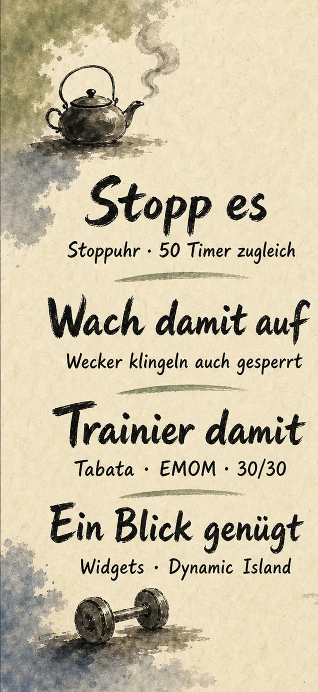
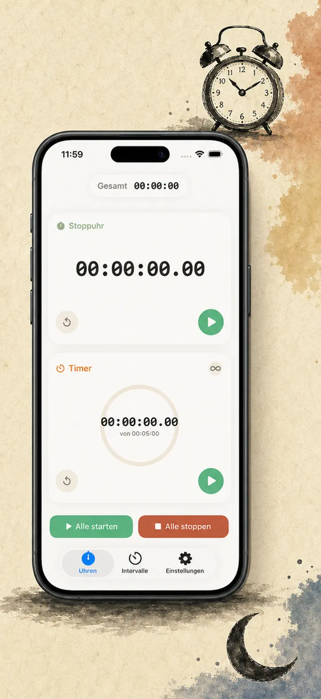
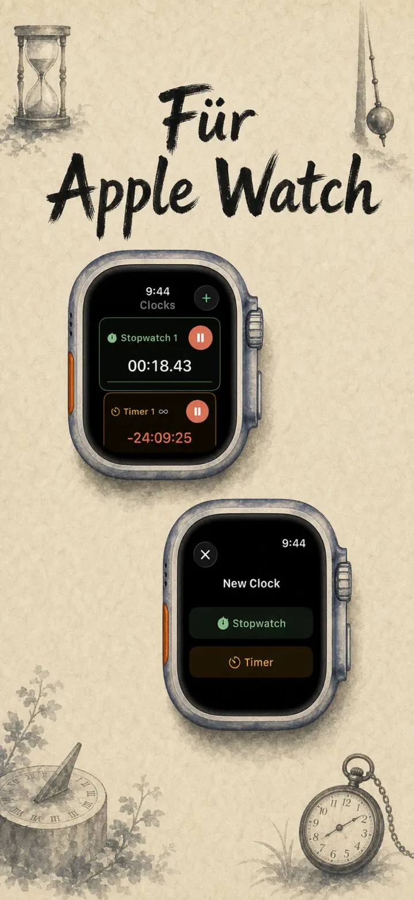
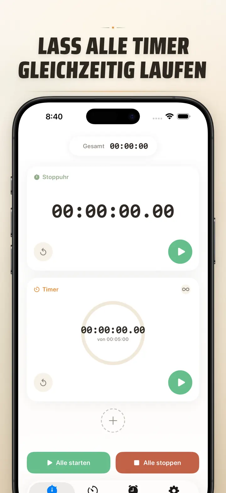
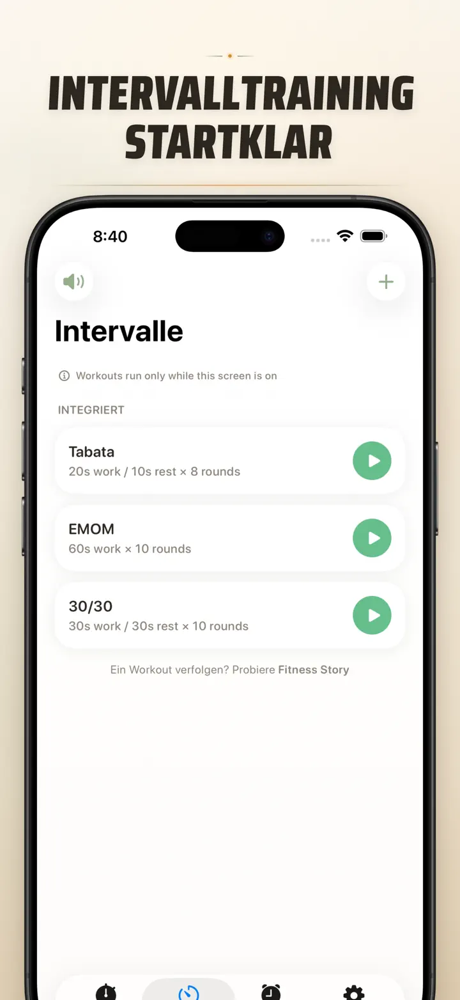
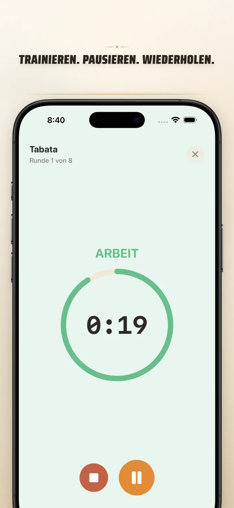
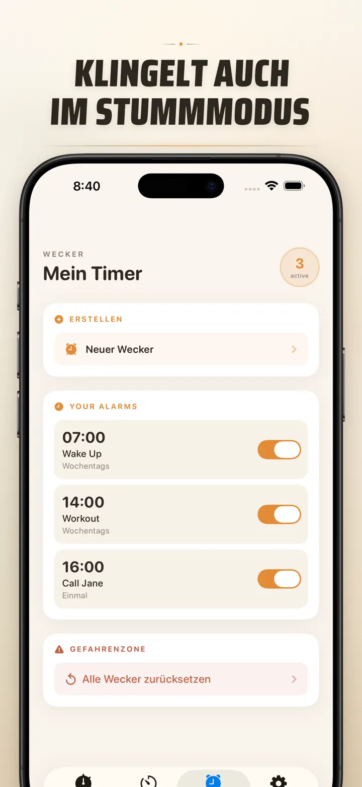

Timer on Me
Timer, Wecker, Stoppuhr & HIIT
Jetzt mit Datums-Wecker: einmaliger Wecker für jedes zukünftige Datum & jede Uhrzeit, plus wiederkehrende Wecker, 50 Timer gleichzeitig, HIIT & Tabata und Apple Watch.
Im App Store laden
Über die App
Mein Timer ist dein Multi-Timer und Stoppuhr für iPhone, iPad und Apple Watch. Bis zu 50 unabhängige Timer gleichzeitig, präzise Intervalltrainings und Alarme, die zuverlässig klingeln – auch bei gesperrtem iPhone oder geschlossener App.
WECKER
- Aufwach- und Erinnerungsalarme mit eigenen Labels und Wochentagsplänen
- Powered by AlarmKit – klingelt auch bei gesperrtem iPhone oder geschlossener App
- Konfigurierbare Schlummerfunktion (3 / 5 / 9 / 15 / 30 Minuten) oder ohne Schlummern
- Wähle aus mitgelieferten Klingeltönen oder importiere eigene Sounds
- Mit einem Tap im eigenen Wecker-Tab ein- und ausschalten
INTERVALLTRAINING
- Integrierte Presets: Tabata, EMOM und 30/30 – in zwei Taps startklar
- Eigener Intervall-Editor mit flexiblen Minuten- und Sekunden-Pickern für Arbeit, Pause und Runden
- Vollbild-Trainingsmodus mit Farbwechseln pro Phase, optional mit Stummschaltung
- Pausieren, überspringen und fortsetzen mitten im Workout – ohne Fortschritt zu verlieren
APPLE WATCH
- Echte native watchOS App – keine bloße Begleit-Hülle
- Mehrere Stoppuhren und Timer gleichzeitig am Handgelenk
- Stoppuhr mit Hundertstelsekunden-Genauigkeit
- Eigene Komplikationen für Ein-Tap-Zugriff
- Funktioniert unabhängig, auch wenn das iPhone nicht in Reichweite ist
50 TIMER GLEICHZEITIG
- Bis zu 50 unabhängige Timer und Stoppuhren in einer Session
- Einzeln oder als Gruppe starten, stoppen und zurücksetzen
- Automatische Wiederholung für Rundentraining
- Timer laufen über Null hinaus, um Überzeit zu erfassen
- Fortschrittsbalken mit Farbhinweis: 50 % gelb, 10 % rot
- Per Drag & Drop neu anordnen, eigene Namen vergeben
ZUVERLÄSSIGE ALARME
- AlarmKit: Alarme klingeln, selbst wenn iPhone gesperrt oder App geschlossen ist
- Dynamic Island und Live Activity für den schnellen Blick
- Homescreen-Widgets in klein, mittel und groß
- Integrierte Klingeltöne: Glocken, Vogelstimmen, Vintage-Töne
- Klingelton antippen und sofort vorhören
- „Display anlassen" für lange Sessions ohne Abdunkeln
ANPASSEN & TEILEN
- Dezimalstellen, Gesamtwerte und Prozente nach Bedarf einblenden
- Sessions speichern und überschreiben, nächstes Mal per Ein-Tap laden
- Setups als CSV, JSON oder Klartext exportieren
- Mit Kolleg:innen, Schüler:innen oder Trainer:innen teilen
FÜR iPhone, iPad & APPLE WATCH
- Adaptive Layouts für jede Bildschirmgröße
- Split View auf iPad
- 34 Sprachen
PERFEKT FÜR
- HIIT, Tabata, CrossFit und Zirkeltraining
- Boxen, Kampfsport und Runden
- Sauna-Aufgüsse und Abkühlphasen
- Pomodoro-Lernblöcke und Prüfungsvorbereitung
- Kaffee aufbrühen, Eier kochen, Backen und Ofengerichte
- Yoga, Pilates, Meditation und Atemübungen
- Präsentationen und Instrumentenpraxis
- Unterricht, Workshops und Gruppenaktivitäten
- Brettspiele und Partyspiele
Lade Mein Timer jetzt herunter und nimm jede Minute und jede Sekunde in die Hand – im Gym, im Büro oder zu Hause.
Datenschutzerklärung: https://masawata.net/privacy-policy.html Nutzungsbedingungen: https://www.apple.com/legal/internet-services/itunes/dev/stdeula/
Screenshots






Timer on Me
Jetzt mit Datums-Wecker: einmaliger Wecker für jedes zukünftige Datum & jede Uhrzeit, plus wiederkehrende Wecker, 50 Timer gleichzeitig, HIIT & Tabata und Apple Watch.
Im App Store laden